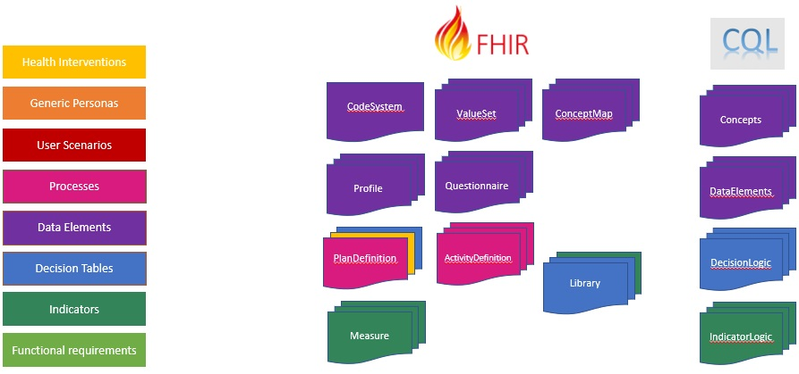
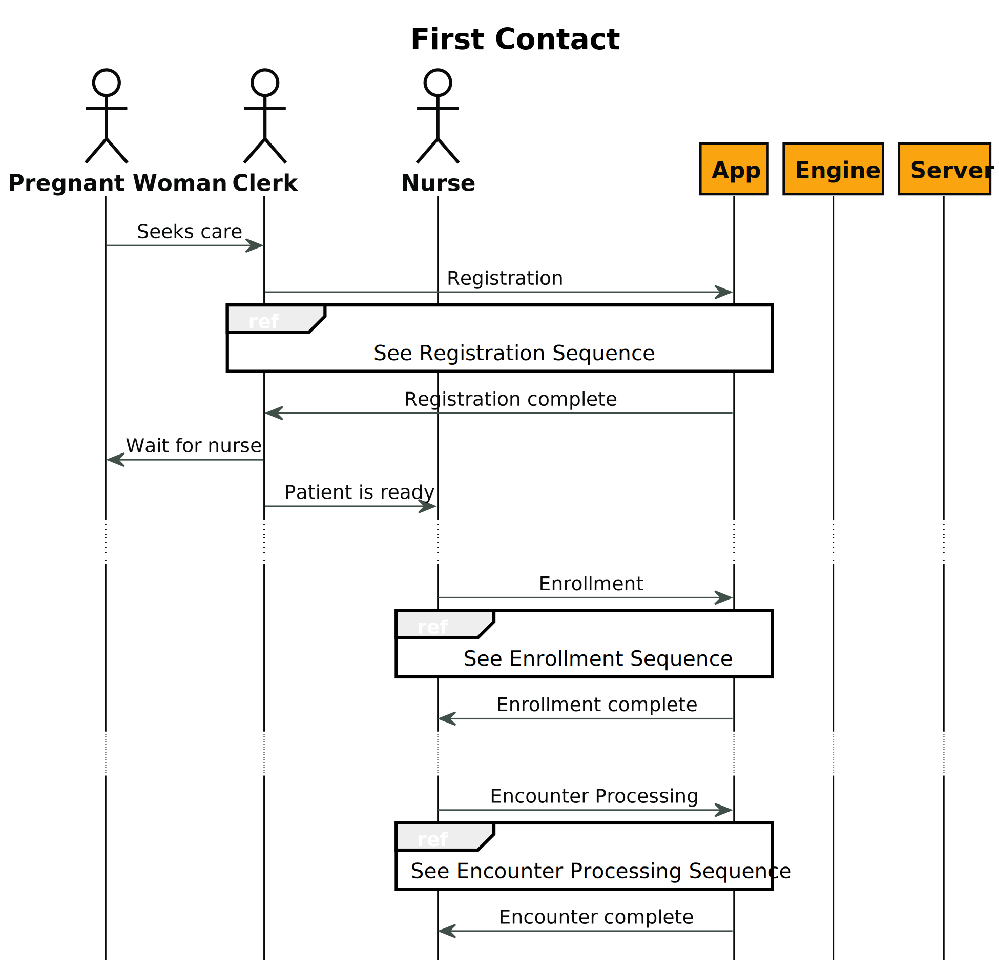
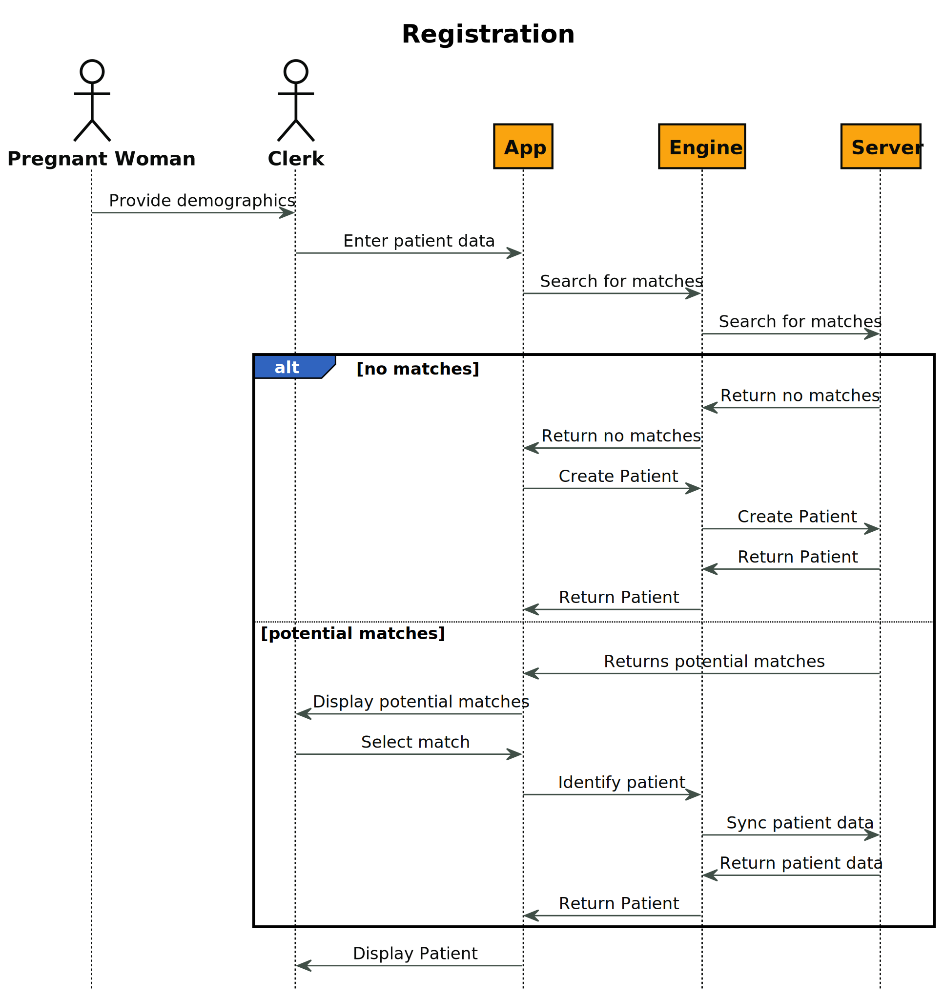
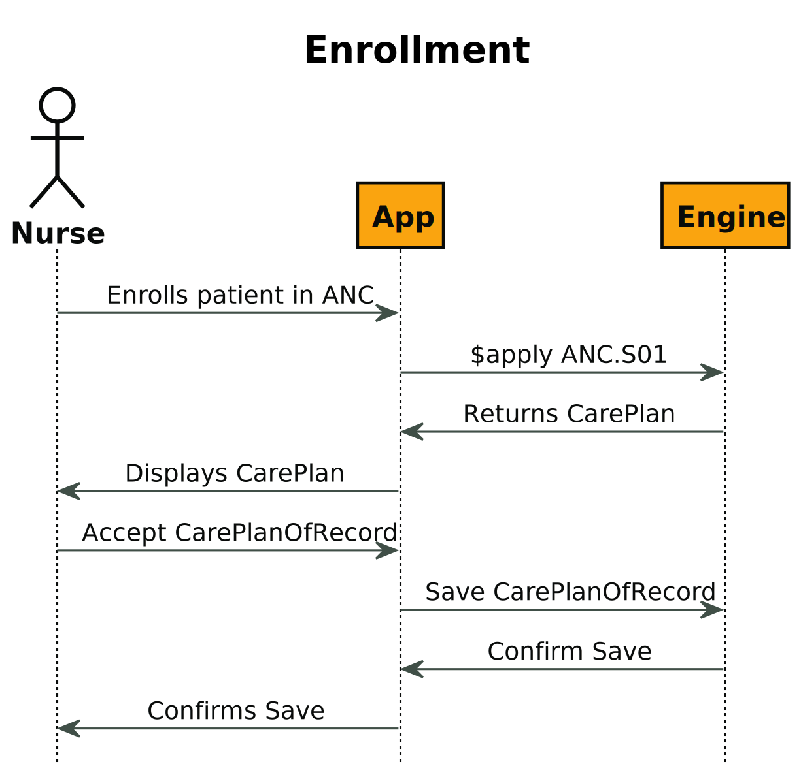
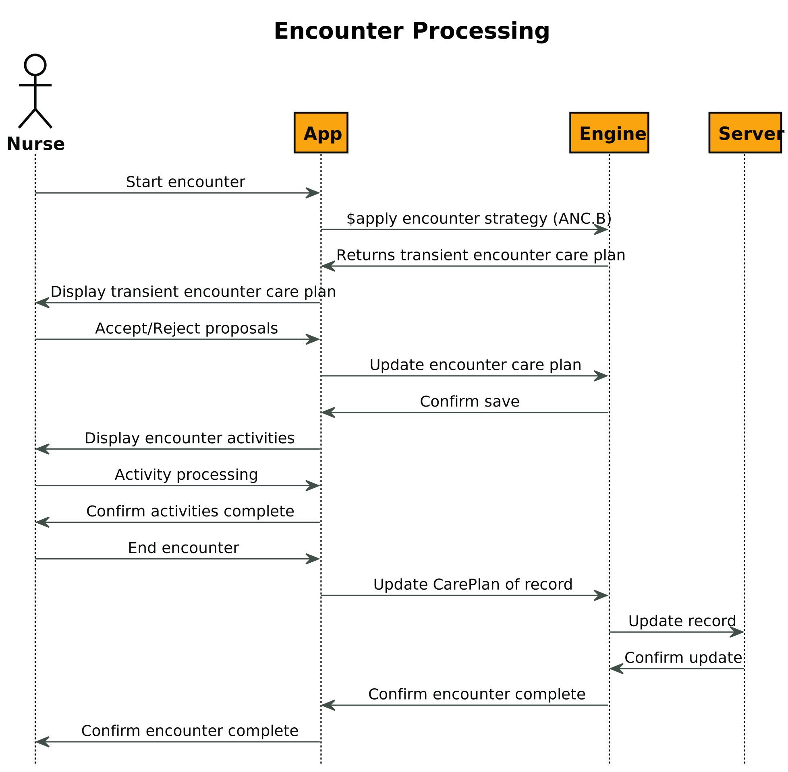
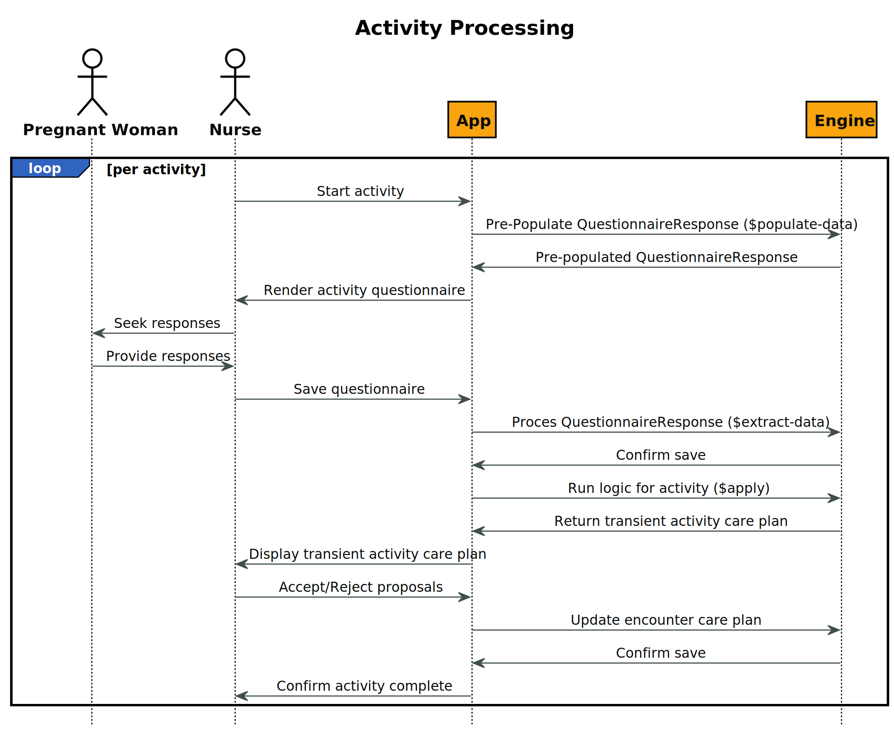

WHO Antenatal Care Guideline Implementation Guide
0.3.0 - CI Build

WHO Antenatal Care Guideline Implementation Guide
0.3.0 - CI Build

This page is part of the WHO SMART Guidelines - ANC (v0.3.0: Release) based on FHIR (HL7® FHIR® Standard) R4. This is the current published version. For a full list of available versions, see the Directory of published versions
This implementation guide provides computable content based on the Digital Adaptation Kit (DAK) to facilitate the implementation of the WHO Antenatal care guidelines. The following diagram illustrates the components of a Digital Adaptation Kit and how those components are represented in FHIR:

The key interventions for routine antenatal care (ANC) are the following, as defined in the WHO UHC compendium of essential interventions:
Health interventions are represented using strategy and pathway artifacts:
| Code | Description | Artifact |
|---|---|---|
| ANC.INT.01 | Health education and counselling to promote healthy pregnancy | future work |
| ANC.INT.02 | Nutritional supplementation during pregnancy | future work |
| ANC.INT.03 | Maternal and fetal assessment and screening during pregnancy | future work |
| ANC.INT.04 | Preventive measures and vaccination during pregnancy | future work |
| ANC.INT.05 | Treatment for physiological symptoms during pregnancy | future work |
| ANC.INT.06 | Antenatal care models with a minimum of eight contacts | ANC.S01 |
Note that although this implementation does not include high-level representations of many of these interventions, the decision support logic included as part of the routine contact provides an implementation of these health interventions.
A persona is a depiction of a relevant stakeholder, or "end-user", of the system. Personas are represented with profiles of the appropriate FHIR resource, as depicted in the following table:
| Occupational title | Description | ISCO code | Profile |
|---|---|---|---|
| Auxilliary nurse midwife (ANM) | Auxiliary nurse midwives (ANMs) assist in the provision of maternal and newborn health care, particularly during childbirth but also in the prenatal and postpartum periods. | 3221 (Nursing associate professional) 3222 (Midwifery associate professional) |
ANCPractitionerRole |
| Midwife | A person who has been assessed and registered by a state midwifery regulatory authority or similar regulatory authority. | 2222 (Midwifery professional) | ANCPractitionerRole |
| Nurse | A graduate who has been legally authorized (registered) to practise after examination by a state board of nurse examiners or similar regulatory authority. | 2221 (Nursing professional) | ANCPractitionerRole |
| Pregnant woman | Pregnant women are the primary clients receiving antenatal care (ANC) services from the targeted health worker personas. | N/A | ANCPatient |
| Adolescent client | Adolescent clients require additional decision support logic | N/A | ANCPatient |
| Lay health worker | Any health worker who performs functions related to health-care delivery, was trained in some way in the context of the intervention but has received no formal professional or paraprofessional certificate or tertiary education degree. | 3259 (Health associate professionals not elsewhere classified) | ANCPractitionerRole |
| Community health worker | Community health workers provide health education, referral and follow-up; case management and basic preventive health care; and home visiting services to specific communities. They provide support and assistance to pregnant women and their families in navigating the health and social services system. | 3253 (Community health workers) | ANCPractitionerRole |
NOTE: There are other personas in the Digital Adaptation Kit (Nurse/Midwife supervisor, Facility Manager) that are not represented here.
See the ANC Personas code system for complete definitions.
User scenarios are a narrative description of how different personas would interact with each other. The user scenario is provided to help the reader better understand how the system will be used and how it would fit into existing workflows. The following illustrative examples provide scenarios that may be common within ANC. In the subsequent component on workflows, these types of scenarios will be presented in a visual diagram, as opposed to narrative form. Note: these scenarios are not exhaustive and are only intended to contextualize the workflows in Component 4.
User scenarios within this implementation guide are represented with ExampleScenario resources.
First Contact Example Scenario
Second Contact Example Scenario
| Label | Process name | Process ID | Artifact |
|---|---|---|---|
| A | Registration | ANC.A | CPGCommonRegistration |
| B | Routine ANC Contact | ANC.B | ANC.B Routine Contact |
| C | ANC referral | ANC.C | future work |
| D | ANC health promotion, follow-up in the community | ANC.D | future work |
| E | Reporting on aggregate indicators | ANC.E | future work |
NOTE: C, D, and E are not yet specified by this implementation guide
Each of these steps will have data requirements that are either met/unmet, and a corresponding questionnaire (either explicitly specified, or derived from missing/incomplete data requirements) to be used as an interface for completing the activity. Each of the steps here are mapped to one of the common process codes in CPGCommonProcess:
NOTE: Steps 1 and 2 are expected to be performed as part of the registration process and are not modeled in the routine contact.
The following sequence diagrams illustrate the processing that occurs in a typical first contact scenario. The actors are:
The First Contact sequence illustrates the overall processing and high-level steps:

The Registration sequence illustrates the process of identifying and potentially creating the patient record, syncing that data with a clinical data repository, and collecting initial information from the pregnant woman:

The Enrollment sequence illustrates the process that a Nurse uses to manually enroll the patient in the Antenatal care pathway, establishing the Care Plan of Record:

The Encounter Processing sequence illustrates the process of starting an encounter and establishing the activities to be performed based on the Routine Contact strategy:

The Activity Processing sequence illustrates the general process of performing activities within the encounter. For each activity, the decision logic associated with that activity provides proposed activities based on the guideline:

Data elements are represented within this implementation guide using FHIR profiles of the appropriate resource as well as libraries of associated calculation logic for calculated, or inferred, data elements.
Note that some "Data elements" from the perspective of the Data Dictionary presented in the DAK are actually rollups. For example, Patient last name is a specific data element within the DAK, but is represented as one of many elements in the ANCPatient profile.
The following diagram illustrates the processing used to derive FHIR terminology and profile resources from the data dictionary:
The inputs on the left consist of:
NOTE: The FHIR mappings are not part of the Digital Adaptation Kit, but are introduced as part of this implementation guide. The WHO_ANC.xlsx spreadsheet in the input/l2 folder is the source for these mappings, and was created by copying the WHO_ANC spreadsheet from the Digital Adaptation Kit, and then adding the FHIR mapping columns and providing the individual data element mappings.
The outputs on the right consist of:
Separating the Concepts CQL allows the domain-friendly name for each concept and answer set to be referenced by that name within the logic. This pattern also allows implementations to easily vary implementation by providing alternate versions of the Concepts library with their own definitions for the value sets, supporting local adaptation.
Separating the Patient and Encounter perspectives of the DataElements libraries allows the same data elements to be used from different contexts, depending on the use case. For example, when referenced from decision support logic, the Encounter perspective is typically used, whereas from indicator logic, the Patient perspective is typically used.
The model for data elements represented within this implementation guide is based on the following profiles. All the data elements defined derive from one of these profiles, and all data used within smart content and related decision support rules and health metrics use these profiles, or profiles that are derived from them:
The following index lists all data elements, grouped by their activity:
Data elements for this activity can be collected using the ANCA questionnaire.
| Id | Label | Description | Type | Profile Path |
|---|---|---|---|---|
| ANC.A.DE4 | Contact date | The date and time of the client's contact | dateTime | Encounter.period.start |
| ANC.B5.DE1 | Reason for coming to facility | Records the reason why the woman came to the health-care facility today | CodeableConcept | Encounter.reasonCode |
| ANC.A.DE12 | ANC contact number | The ANC contact or visit number – recommended minimum is 8 contacts | Integer | Encounter.contactNumber |
| ANC.A.DE1 | Unique identification | Unique identifier generated for new clients or a universal ID, if used in the country | string | Patient.identifier.value |
| ANC.A.DE2 | First name | Client's first name | string | Patient.name.given |
| ANC.A.DE3 | Last name | Client's family name or last name | string | Patient.name.family |
| ANC.A.DE5 | Date of birth | The client's date of birth (DOB), if known | dateTime | Patient.birthDate |
| ANC.A.DE7 | Address | Client's home address or address that the client is consenting to disclose | string | Patient.address.line |
| ANC.A.DE8 | Mobile phone number | Client's mobile phone number | string | Patient.telecom.value |
| ANC.A.DE10 | Alternative contact's name | Name of an alternative contact, which could be next of kin (e.g. partner, mother, sibling); the alternative contact would be used in the case of an emergency situation | string | Patient.contact.name |
| ANC.A.DE11 | Alternative contact's phone number | Phone number of the alternative contact | string | Patient.contact.telecom.value |
| ANC.A.DE9 | Woman wants to receive reminders during pregnancy | Whether or not the woman wants to receive SMS or other messages regarding her ANC contacts and health status during pregnancy | boolean | Patient.reminder |
| ANC.B6.DE1 | Highest level of education achieved | The highest level of schooling the woman has reached | Code | Patient.educationLevel |
| ANC.B6.DE7 | Occupation | The woman's occupation (select all that apply) | Code | Patient.occupation |
| ANC.A.DE13 | Co-habitants | Who does the client live with? It is important to know whether client lives with parents, other family members, a partner, friends, etc. | CodeableConcept | Observation.value[x] |
Data elements for this activity can be collected using the ANCB4 questionnaire.
| Id | Label | Description | Type | Profile Path |
|---|---|---|---|---|
| ANC.B4.DE1 | Pregnancy confirmed | Pregnancy has been confirmed | boolean | Observation.value[x] |
Data elements for this activity can be collected using the ANCB5 questionnaire.
| Id | Label | Description | Type | Profile Path |
|---|---|---|---|---|
| ANC.B5.DE48 | Danger signs | Before each contact, the health worker should check whether the woman has any of the danger signs listed here – if yes, she should refer to the hospital urgently; if no, she should continue to the normal contact | CodeableConcept | Observation.value[x] |
| ANC.B5.DE5 | Specific health concern(s) | If the woman came to the facility with a specific health concern, select the health concern(s) from the list | CodeableConcept | Observation.value[x] |
Data elements for this activity can be collected using the ANCB6 questionnaire.
| Id | Label | Description | Type | Profile Path |
|---|---|---|---|---|
| ANC.B6.DE100 | Tetanus toxoid-containing vaccine (TTCV) immunization history | The woman's history of receiving tetanus toxoid-containing vaccine (TTCV) | CodeableConcept | Observation.value[x] |
| ANC.B6.DE105 | Flu immunization history | Whether or not this year's seasonal flu vaccine has been provided | CodeableConcept | Observation.value[x] |
| ANC.B6.DE109 | Current medications | Select all of the medications the woman is currently taking | CodeableConcept | Observation.value[x] |
| ANC.B6.DE139 | Daily caffeine intake | Assesses whether the woman consumes more than 300 mg of caffeine per day | CodeableConcept | Observation.value[x] |
| ANC.B6.DE14 | Last menstrual period (LMP) date | The woman's last menstrual period (LMP) date; this is defined as the first day of her most recent period | dateTime | Observation.value[x] |
| ANC.B6.DE145 | Clinical enquiry for alcohol and other substance use done | Whether or not the health worker has performed a clinical enquiry into alcohol and substance use | CodeableConcept | Observation.value[x] |
| ANC.B6.DE146 | Current alcohol and/or other substance use | Whether or not the woman currently consumes any alcohol or substances | CodeableConcept | Observation.value[x] |
| ANC.B6.DE15 | Ultrasound done | Whether or not the woman has had an ultrasound scan done at any point in this pregnancy | boolean | Observation.value[x] |
| ANC.B6.DE153 | Tobacco use | Whether the woman uses tobacco products | boolean | Observation.value[x] |
| ANC.B6.DE154 | Recently quit tobacco products | Whether the woman has recently quit using any tobacco products | boolean | Observation.value[x] |
| ANC.B6.DE155 | Exposure to second-hand smoke | Anyone in the household smokes tobacco products – whether the woman is exposed to second-hand smoke from anyone in her household | boolean | Observation.value[x] |
| ANC.B6.DE156 | Partner HIV status (reported) | The HIV status of the woman's partner | CodeableConcept | Observation.value[x] |
| ANC.B6.DE160 | Contraceptive use of male condoms | Whether or not the woman (and her partner) use male condoms during sex | boolean | Observation.value[x] |
| ANC.B6.DE161 | Contraceptive use of female condoms | Whether or not the woman (and her partner) use female condoms during sex | boolean | Observation.value[x] |
| ANC.B6.DE17 | Gestational age | Gestational age in weeks and/or days depending on the source of gestational age | Quantity | Observation.value[x] |
| ANC.B6.DE18 | Source of gestational age | Gestational age can be calculated multiple ways – this data element describes where the gestational age above has been calculated from | CodeableConcept | Observation.value[x] |
| ANC.B6.DE22 | Expected date of delivery (EDD) | Expected date of delivery based on gestational age | dateTime | Observation.value[x] |
| ANC.B6.DE24 | Number of pregnancies (gravida) | Total number of times the woman has been pregnant (including this pregnancy); also referred to as gravida | integer | Observation.value[x] |
| ANC.B6.DE25 | Number of miscarriages and/or abortions | Total number of pregnancies lost/ended due to miscarriages and/or abortions before 22 weeks / 5 months | integer | Observation.value[x] |
| ANC.B6.DE26 | Number of live births | Total number of live births after 22 weeks | integer | Observation.value[x] |
| ANC.B6.DE27 | Whether last live birth was preterm | Was the last live birth preterm? Whether the last live birth was preterm (i.e. less than 37 weeks gestation at the time of delivery) | CodeableConcept | Observation.value[x] |
| ANC.B6.DE31 | Number of stillbirths | Total number of stillbirths after 22 weeks | integer | Observation.value[x] |
| ANC.B6.DE32 | Parity | Calculated parity is the total number of live and stillbirths | integer | Observation.value[x] |
| ANC.B6.DE33 | Number of caesarian sections | Total number of caesarean sections | integer | Observation.value[x] |
| ANC.B6.DE34 | Past pregnancy complications | Mark whether the woman has had any complications or problems in any previous pregnancy | CodeableConcept | Observation.value[x] |
| ANC.B6.DE51 | Substance use during past pregnancy specification | If selected substance use, specify and indicate what type of substances used during past pregnancies | CodeableConcept | Observation.value[x] |
| ANC.B6.DE57 | Allergies | Does the woman have any allergies? | CodeableConcept | Observation.value[x] |
| ANC.B6.DE72 | Past surgeries | Has the woman had any prior surgeries? | CodeableConcept | Observation.value[x] |
| ANC.B6.DE83 | Existing chronic health conditions | Does the woman have any current chronic health conditions or problems? | CodeableConcept | Observation.value[x] |
| ANC.B6.DE99 | HIV diagnosis date | If woman knows she's HIV+, record the date of her diagnosis | CodeableConcept | Observation.value[x] |
| ANC.B6.DE16 | Ultrasound date | Date that the ultrasound was done | dateTime | Procedure.performed[x] |
| ANC.B9.DE3 | Ultrasound scan conducted | Whether an ultrasound scan was conducted during a specific contact | CodeableConcept | Procedure.code |
Data elements for this activity can be collected using the ANCB7 questionnaire.
| Id | Label | Description | Type | Profile Path |
|---|---|---|---|---|
| ANC.B7.DE1 | Medication follow-up | Which of the medications(including supplements and vitamins) is the woman taking and any side effects? | CodeableConcept | Observation.value[x] |
| ANC.B7.DE18 | Persistent physiological symptoms | Which of the following physiological symptoms persist? Select which of the following physiological symptoms persist after being reported during last contact | CodeableConcept | Observation.value[x] |
| ANC.B7.DE43 | Current physiological symptoms | The physiological symptoms that the woman is experiencing right now: select "None" if she is experiencing none of these symptoms | CodeableConcept | Observation.value[x] |
| ANC.B7.DE71 | Presenting signs and symptoms that trigger suspicion of IPV and clinical inquiry | Presenting signs and symptoms that trigger clinical enquiry of IPV. The Input Options listed below are based on Health care for women subjected to intimate partner violence or sexual violence – a clinical handbook (3) | CodeableConcept | Observation.value[x] |
| ANC.B7.DE97 | Woman discloses or is suspected to be subjected to intimate partner violence | Woman discloses or is suspected to be subjected to intimate partner violence | CodeableConcept | Observation.value[x] |
| ANC.B7.DE98 | Fetal movement | Whether the woman has felt the baby move or not or if the baby's movements have decreased | CodeableConcept | Observation.value[x] |
| ANC.B7.DED9 | Persistent behaviours | Which of the following behaviours persist? Select which of the following behaviours persist after being reported during last contact | CodeableConcept | Observation.value[x] |
| ANC.B8.DE128 | Has the woman been subjected to intimate partner violence | Whether the woman has been subjected to intimate partner violence | boolean | Observation.value[x] |
Data elements for this activity can be collected using the ANCB8 questionnaire.
| Id | Label | Description | Type | Profile Path |
|---|---|---|---|---|
| ANC.B8.DE1 | Height | The woman's current height in centimetres | Quantity | Observation.value[x] |
| ANC.B8.DE10 | Expected weight gain | Expected weight gain during pregnancy is based on the woman's weight category | CodeableConcept | Observation.value[x] |
| ANC.B8.DE100 | Oedema severity | Severity of the oedema | CodeableConcept | Observation.value[x] |
| ANC.B8.DE105 | Symphysis-fundal height (SFH) | The symphysis-fundal height (SFH) in centimetres | Quantity | Observation.value[x] |
| ANC.B8.DE106 | Fetal heartbeat present | Whether or not the health worker observes a fetal heartbeat | boolean | Observation.value[x] |
| ANC.B8.DE107 | Fetal heart rate | The fetal heart rate in beats per minute (bpm) | Quantity | Observation.value[x] |
| ANC.B8.DE108 | Second fetal heart rate | The second fetal heart rate reading in beats per minute (bpm) | Quantity | Observation.value[x] |
| ANC.B8.DE109 | Number of fetuses | Indicate the number of fetuses the woman is carrying | Quantity | Observation.value[x] |
| ANC.B8.DE110 | Number of fetuses unknown | Number of fetuses cannot be determined at this time, thus the number of fetuses is unknown | Quantity | Observation.value[x] |
| ANC.B8.DE111 | Fetal presentation | If a single fetus only, indicate the presentation of the fetus in the uterus | CodeableConcept | Observation.value[x] |
| ANC.B8.DE117 | Presenting signs/conditions for IPV | Signs or conditions that are due to or trigger suspicion of intimate partner violence? | CodeableConcept | Observation.value[x] |
| ANC.B8.DE121 | Clinical enquiry for IPV | Whether or not clinical enquiry for IPV was conducted based on presenting signs and symptoms and conditions | boolean | Observation.value[x] |
| ANC.B8.DE122 | Reason clinical enquiry not done | Reason clinical enquiry not done | CodeableConcept | Observation.value[x] |
| ANC.B8.DE129 | Types of IPV | What type(s) of violence has the woman been subjected to? | CodeableConcept | Observation.value[x] |
| ANC.B8.DE15 | Average weight gain per week | Average weight gain per week since last contact (kg); this would only display starting at the 2nd contact | Quantity | Observation.value[x] |
| ANC.B8.DE16 | Total weight gain (kg) | Total weight gain in pregnancy so far (kg) | Quantity | Observation.value[x] |
| ANC.B8.DE17 | Systolic blood pressure | Systolic blood pressure (SBP) in mmHg | Quantity | Observation.value[x] |
| ANC.B8.DE19 | Diastolic blood pressure | Diastolic blood pressure (DBP) in mmHg | Quantity | Observation.value[x] |
| ANC.B8.DE2 | Pre-gestational weight | The woman's pre-gestational weight in kilograms | Quantity | Observation.value[x] |
| ANC.B8.DE20 | Repeat systolic blood pressure | Repeat measurement of the woman's systolic blood pressure in mmHg after 10–15 minutes rest | Quantity | Observation.value[x] |
| ANC.B8.DE21 | Repeat diastolic blood pressure | Repeat measurement of the woman's diastolic blood pressure in mmHg after 10–15 minutes rest | Quantity | Observation.value[x] |
| ANC.B8.DE22 | Blood pressure cannot be taken | If the woman's blood pressure cannot be taken, this should be indicated here; otherwise, blood pressure should be measured | boolean | Observation.value[x] |
| ANC.B8.DE23 | Reason blood pressure cannot be taken | The reason why the health worker is unable to record the woman's BP during this contact visit | CodeableConcept | Observation.value[x] |
| ANC.B8.DE27 | Symptoms of severe pre-eclampsia | Check if the woman has any of the following symptoms of severe pre-eclampsia | CodeableConcept | Observation.value[x] |
| ANC.B8.DE3 | Current weight | The woman's current weight in kilograms | Quantity | Observation.value[x] |
| ANC.B8.DE34 | Body temperature | The woman's body temperature in degrees Celsius (°C) (first reading) | Quantity | Observation.value[x] |
| ANC.B8.DE35 | Second body temperature | The woman's body temperature in degrees Celsius (°C) (second reading) | Quantity | Observation.value[x] |
| ANC.B8.DE36 | Pulse rate | The woman's pulse rate in beats per minute (bpm) | Quantity | Observation.value[x] |
| ANC.B8.DE37 | Second pulse rate | The woman's second pulse rate in beats per minute (bpm) | Quantity | Observation.value[x] |
| ANC.B8.DE38 | Pallor present | Whether or not the woman has pallor | boolean | Observation.value[x] |
| ANC.B8.DE39 | Respiratory exam result | The woman's respiratory condition based on respiratory exam | CodeableConcept | Observation.value[x] |
| ANC.B8.DE4 | BMI | Body mass index (BMI): calculated by taking weight in kg divided by the squared height in meters, i.e. kg/(m^2) | Quantity | Observation.value[x] |
| ANC.B8.DE49 | Oximetry | The measure of the oxygen saturation (%) in the woman's blood: this is usually measured using a pulse oximeter medical device | Quantity | Observation.value[x] |
| ANC.B8.DE5 | Weight category | Weight category is calculated from BMI | CodeableConcept | Observation.value[x] |
| ANC.B8.DE50 | Cardiac exam result | The woman's cardiac condition | CodeableConcept | Observation.value[x] |
| ANC.B8.DE61 | Breast exam result | Whether or not the result of the breast exam is normal | CodeableConcept | Observation.value[x] |
| ANC.B8.DE71 | Abdominal exam result | Whether or not the result of the abdominal exam is normal | CodeableConcept | Observation.value[x] |
| ANC.B8.DE79 | Pelvic exam result (visual) | Whether or not the result of the pelvic exam is normal | CodeableConcept | Observation.value[x] |
| ANC.B8.DE92 | Cervical exam conducted | Whether or not the health worker performed a cervical exam | boolean | Observation.value[x] |
| ANC.B8.DE93 | Cervical dilation | If a cervical exam was done, how many centimeters is the cervix dilated? | Quantity | Observation.value[x] |
| ANC.B8.DE94 | Oedema present | Whether or not the woman has oedema | boolean | Observation.value[x] |
| ANC.B8.DE95 | Oedema type | Select the type of oedema the woman has | CodeableConcept | Observation.value[x] |
Data elements for this activity can be collected using the ANCB9 questionnaire.
| Id | Label | Description | Type | Profile Path |
|---|---|---|---|---|
| ANC.B9.DE1 | Ultrasound required | Woman requires an ultrasound scan | boolean | Observation.value[x] |
| ANC.B9.DE102 | Reason syphilis test not done | Select the reason why a syphilis test was not done | CodeableConcept | Observation.value[x] |
| ANC.B9.DE107 | Syphilis test result | Syphilis test result | CodeableConcept | Observation.value[x] |
| ANC.B9.DE110 | Syphilis diagnosis | Calculation for whether woman has syphilis (1) or not (0) | CodeableConcept | Observation.value[x] |
| ANC.B9.DE113 | Urine test required | Urine test is required | boolean | Observation.value[x] |
| ANC.B9.DE115 | Urine test ordered | Urine test has been ordered | CodeableConcept | ServiceRequest.code |
| ANC.B9.DE116 | Urine test type | Select the type of urine test that was done. Of the three types of tests, the midstream urine culture is the preferred method. If culture is not available, then midstream Gram-staining test is preferred over dipstick. Urine dipstick test is required if need to check urine for protein. | CodeableConcept | Observation.value[x] |
| ANC.B9.DE120 | Reason urine test not done | Select the reason why a urine test was not done at this contact | CodeableConcept | Procedure.code |
| ANC.B9.DE124 | Midstream urine culture (recommended) | Midstream urine culture is the recommended method for diagnosing asymptomatic bacteriuria (ASB) in pregnancy | CodeableConcept | Observation.value[x] |
| ANC.B9.DE129 | Midstream urine Gram-staining | On-site midstream urine Gram-staining is recommended over the use of dipstick tests as the method for diagnosing ASB in pregnancy if midstream culture is not possible | CodeableConcept | Observation.value[x] |
| ANC.B9.DE13 | Placenta location | Location of the placenta detected during the ultrasound | CodeableConcept | Observation.value[x] |
| ANC.B9.DE132 | Urine dipstick result - nitrites | Dipstick test results – nitrites | CodeableConcept | Observation.value[x] |
| ANC.B9.DE138 | Urine dipstick result - leukocytes | Dipstick test results – leukocytes | CodeableConcept | Observation.value[x] |
| ANC.B9.DE144 | Urine dipstick result - protein | Enter the result for the dipstick test – protein | CodeableConcept | Observation.value[x] |
| ANC.B9.DE150 | Urine dipstick result - glucose | Dipstick test results – glucose | CodeableConcept | Observation.value[x] |
| ANC.B9.DE156 | Asymptomatic bacteriuria (ASB) diagnosis | A woman is considered to have ASB if she has one of the following test results:?– Positive culture (> 100,000 bacteria/mL)?– Gram-staining positive?– Urine dipstick test positive (nitrites or leukocytes) | CodeableConcept | Observation.value[x] |
| ANC.B9.DE160 | Blood glucose test ordered | Blood glucose test has been ordered | CodeableConcept | ServiceRequest.code |
| ANC.B9.DE162 | Blood glucose test type | Select the type of blood glucose test done | CodeableConcept | Observation.value[x] |
| ANC.B9.DE163 | Fasting plasma glucose | Fasting plasma glucose | Quantity | Observation.value[x] |
| ANC.B9.DE164 | 75 g oral glucose tolerance test (OGTT) - fasting glucose | 75 g oral glucose tolerance test (OGTT) – fasting glucose | Quantity | Observation.value[x] |
| ANC.B9.DE165 | 75 g oral glucose tolerance test (OGTT) - 1 hour | 75 g oral glucose tolerance test (OGTT) – 1 hour | Quantity | Observation.value[x] |
| ANC.B9.DE166 | 75 g oral glucose tolerance test (OGTT) - 2 hours | 75 g oral glucose tolerance test (OGTT) – 2 hours | Quantity | Observation.value[x] |
| ANC.B9.DE167 | Random plasma glucose | Random plasma glucose | Quantity | Observation.value[x] |
| ANC.B9.DE168 | Blood glucose test result | Enter the result for the blood glucose test (mg/dl) | Quantity | Observation.value[x] |
| ANC.B9.DE169 | Gestational diabetes mellitus (GDM) diagnosis | Whether the woman has gestational diabetes mellitus (GDM) | CodeableConcept | Observation.value[x] |
| ANC.B9.DE172 | Diabetes mellitus (DM) during pregnancy diagnosis | Whether the woman has developed diabetes mellitus during pregnancy | CodeableConcept | Observation.value[x] |
| ANC.B9.DE176 | Blood haemoglobin test ordered | Whether or not the blood haemoglobin test (Hb test) has been ordered | CodeableConcept | ServiceRequest.code |
| ANC.B9.DE177 | Blood haemoglobin test type | Select the type of Hb test that was done | CodeableConcept | Observation.value[x] |
| ANC.B9.DE181 | Reason blood haemoglobin test not done | Select the reason why a Hb test was not done | CodeableConcept | Procedure.code |
| ANC.B9.DE186 | Blood haemoglobin test result | Blood haemoglobin test result in g/dl | Quantity | Observation.value[x] |
| ANC.B9.DE187 | Anaemia diagnosis | Calculated field to determine woman's anaemia status | CodeableConcept | Observation.value[x] |
| ANC.B9.DE190 | Hematocrit (Ht) | Hematocrit percentage | Quantity | Observation.value[x] |
| ANC.B9.DE191 | White blood cell (WBC) count | Full white blood cells count | Quantity | Observation.value[x] |
| ANC.B9.DE192 | Platelet count | Full platelets count | Quantity | Observation.value[x] |
| ANC.B9.DE193 | TB screening recommended | TB screening is recommended | boolean | ServiceRequest.code |
| ANC.B9.DE195 | TB screening ordered | TB screening has been ordered | CodeableConcept | ServiceRequest.code |
| ANC.B9.DE196 | Reason TB screening not done | Select the reason why TB screening was not done | CodeableConcept | Procedure.code |
| ANC.B9.DE2 | Ultrasound scan ordered | An ultrasound scan has been ordered | CodeableConcept | ServiceRequest.code |
| ANC.B9.DE206 | TB screening result | Record the result of the TB screening | CodeableConcept | Observation.value[x] |
| ANC.B9.DE21 | Blood type test ordered | Blood type test has been ordered | boolean | ServiceRequest.code |
| ANC.B9.DE214 | Other test(s) result(s) | Input the result from the test(s) | CodeableConcept | Observation.value[x] |
| ANC.B9.DE24 | Blood type | The client's blood type | CodeableConcept | Observation.value[x] |
| ANC.B9.DE29 | Rh factor | The client's Rhesus (Rh) factor | CodeableConcept | Observation.value[x] |
| ANC.B9.DE33 | HIV test required | HIV test is required | boolean | Observation.value[x] |
| ANC.B9.DE34 | HIV test ordered | HIV test has been ordered | CodeableConcept | ServiceRequest.code |
| ANC.B9.DE36 | Reason HIV test not done | Select the reason why an HIV test was not done | CodeableConcept | Procedure.code |
| ANC.B9.DE41 | HIV test result | Select the result of the HIV test | CodeableConcept | Observation.value[x] |
| ANC.B9.DE45 | HIV status | Calculated field for woman's HIV status | CodeableConcept | Observation.value[x] |
| ANC.B9.DE48 | Partner HIV test result | Select the result of her partner's HIV test | CodeableConcept | Observation.value[x] |
| ANC.B9.DE49 | Partner HIV test ordered | An HIV test for the woman's partner has been ordered | CodeableConcept | ServiceRequest.code |
| ANC.B9.DE5 | Reason ultrasound scan not done | Select the reason why an ultrasound scan was not done | CodeableConcept | Procedure.code |
| ANC.B9.DE55 | Partner HIV status (confirmed) | Partner's confirmed HIV status | CodeableConcept | Observation.value[x] |
| ANC.B9.DE58 | High risk for HIV | If the woman lives in a setting with a generalized HIV epidemic, or her partner is HIV positive, or she injects drugs, or she has an employment at increased risk for HIV, then she is at high risk for HIV | boolean | Observation.value[x] |
| ANC.B9.DE59 | Hepatitis B test required | Hepatitis B test is required | boolean | Observation.value[x] |
| ANC.B9.DE61 | Hepatitis B test ordered | Hepatitis B test has been ordered | CodeableConcept | ServiceRequest.code |
| ANC.B9.DE62 | Hepatitis B test type | Select the type of Hep B test done | CodeableConcept | Observation.value[x] |
| ANC.B9.DE66 | Hepatitis B test result | Select the reason why a Hep B test was not done | CodeableConcept | Procedure.code |
| ANC.B9.DE74 | Hepatitis B diagnosis | This calculates the woman's Hep B infection status as positive (1) or negative (0), taking into account any of the three methods for Hep B testing | CodeableConcept | Observation.value[x] |
| ANC.B9.DE77 | Hepatitis C test required | Hepatitis C test is required | boolean | Observation.value[x] |
| ANC.B9.DE79 | Hepatitis C test ordered | Hepatitis C test has been ordered | CodeableConcept | ServiceRequest.code |
| ANC.B9.DE80 | Hepatitis C test type | Select the type of Hep C test that was done | CodeableConcept | Observation.value[x] |
| ANC.B9.DE84 | Reason Hepatitis C test not done | Select the reason why a Hep C test was not done | CodeableConcept | Procedure.code |
| ANC.B9.DE89 | Hepatitis C test result | Hepatitis C test result | CodeableConcept | Observation.value[x] |
| ANC.B9.DE9 | Amniotic fluid level | Amniotic fluid level detected during ultrasound | CodeableConcept | Observation.value[x] |
| ANC.B9.DE92 | Hepatitis C diagnosis | This calculates the woman's Hep C infection status as positive (1) or negative (0), taking into account any of the three methods for Hep C testing | CodeableConcept | Observation.value[x] |
| ANC.B9.DE97 | Syphilis test ordered | Syphilis test has been ordered | CodeableConcept | ServiceRequest.code |
| ANC.B9.DE98 | Syphilis test type | Select the type of syphilis test that was done | CodeableConcept | Observation.value[x] |
| ANC.B9.DE161 | Blood glucose test date | Select the date of the glucose test | dateTime | Procedure.performed[x] |
| ANC.B9.DE175 | Blood haemoglobin test conducted | A blood haemoglobin test (Hb test) is required for all women multiple times during pregnancy to determine whether she's anaemic | CodeableConcept | Procedure.code |
| ANC.B9.DE185 | Blood haemoglobin test date | Select the date of the Hb test | dateTime | Procedure.performed[x] |
| ANC.B9.DE22 | Blood type test conducted | Blood type test has been conducted | CodeableConcept | Procedure.code |
| ANC.B9.DE23 | Blood type test date | Date of the blood type test | dateTime | Procedure.performed[x] |
| ANC.B9.DE60 | Hepatitis B test conducted | Select the status of the Hep B test – record result, ordered (pending) or not done | CodeableConcept | Procedure.code |
| ANC.B9.DE70 | Hepatitis B test date | Select the date of the hepatitis B test | dateTime | Procedure.performed[x] |
| ANC.B9.DE78 | Hepatitis C test conducted | In a setting where the proportion of HCV antibody seroprevalence in the general population is ≥ 2% or the woman is HIV positive, injects drugs or is a sex worker, then a Hep C test is required | CodeableConcept | Procedure.code |
| ANC.B9.DE88 | Hepatitis C test date | Select the date of the hepatitis C test | dateTime | Procedure.performed[x] |
| ANC.B9.DE106 | Syphilis test date | Select the date of the syphilis test | dateTime | Procedure.performed |
| ANC.B9.DE35 | HIV test conducted | An HIV test is required for all pregnant women at the first contact in pregnancy and again at the first contact of the 3rd trimester if the HIV prevalence in the pregnant woman population is ≥ 5%. A test is not required if the woman is already confirmed HIV+. | CodeableConcept | Procedure.code |
| ANC.B9.DE40 | HIV test date | Date of the HIV test | dateTime | Procedure.performed[x] |
| ANC.B9.DE211 | Other tests conducted | If the health worker performed other tests on the woman that are not explicitly listed in the application, select "yes" here and fill in the details below | CodeableConcept | Procedure.code |
| ANC.B9.DE212 | Other test(s) name | Input the name of other test(s) that were done | String | Procedure.code.text |
| ANC.B9.DE213 | Other test(s) date | Input the date of other test(s) that were done | dateTime | Procedure.performed[x] |
| ANC.B9.DE50 | Partner HIV test conducted | If the woman does not know the HIV status of her partner(s), offer to test and add results here | CodeableConcept | Procedure.code |
| ANC.B9.DE51 | Partner HIV test date | Select the date of her partner's HIV test | dateTime | Procedure.performed[x] |
| ANC.B9.DE96 | Syphilis test conducted | A syphilis test is recommended for all pregnant women at the first contact and again at the first contact of 3rd trimester; women who are already confirmed positive for syphilis do not need to be tested | CodeableConcept | Procedure.code |
| ANC.B9.DE194 | TB screening conducted | In settings where the tuberculosis (TB) prevalence in the general population is 100/100,000 population or higher or in settings with subpopulations that have very poor access to health care, or if the woman is HIV positive, TB screening is recommended | CodeableConcept | Procedure.code |
| ANC.B9.DE205 | TB screening date | Record the date of the TB screening | dateTime | Procedure.performed[x] |
| ANC.B9.DE114 | Urine test conducted | A urine test is required at the first contact, last contact in 2nd trimester, and 2nd contact in 3rd trimester OR anytime the woman reports pain during urination (dysuria). A dipstick test is required if the woman has a repeat high BP reading (140/90 or higher). Otherwise, a urine test is optional. The urine test checks for bacterial or other infections that can lead to adverse outcomes for the neonate. The urine dipstick test can check for proteins in the urine, which can be a sign of pre-eclampsia. | CodeableConcept | Procedure.code |
| ANC.B9.DE125 | Urine test date | Select the date of the urine test | dateTime | Procedure.performed[x] |
Data elements for this activity can be collected using the ANCB10 questionnaire.
| Id | Label | Description | Type | Profile Path |
|---|---|---|---|---|
| ANC.B10.DE1 | Counselling conducted on caffeine reduction | Whether or not counselling was done on lowering daily caffeine intake | CodeableConcept | Procedure.code |
| ANC.B10.DE10 | Reason counselling on second-hand smoke was not conducted | Select the reason why counselling on second-hand smoke cessation was not done | CodeableConcept | Procedure.code |
| ANC.B10.DE13 | Counselling conducted on condom use | Whether or not counselling was done on condom use | CodeableConcept | Procedure.code |
| ANC.B10.DE14 | Reason counselling on condom use was not conducted | Select the reason why counselling on condom use was not done | CodeableConcept | Procedure.code |
| ANC.B10.DE17 | Counselling conducted on alcohol / substance use | Whether or not counselling was done on alcohol and substance use cessation | CodeableConcept | Procedure.code |
| ANC.B10.DE18 | Reason counselling on alcohol / substance use was not conducted | Select the reason why counselling on alcohol and substance use was not done | CodeableConcept | Procedure.code |
| ANC.B10.DE2 | Reason counselling on caffeine reduction was not done | The reason why the health worker did not counsel on caffeine reduction | CodeableConcept | Procedure.code |
| ANC.B10.DE5 | Counselling conducted on tobacco cessation | Whether or not counselling was done on tobacco cessation | CodeableConcept | Procedure.code |
| ANC.B10.DE6 | Reason counselling on tobacco cessation was not conducted | Select the reason why counselling on tobacco cessation was not done | CodeableConcept | Procedure.code |
| ANC.B10.DE9 | Counselling conducted on second-hand smoke | Whether or not counselling was done on second-hand smoke cessation | CodeableConcept | Procedure.code |
| ANC.B10.DE21 | Counselling conducted on non-pharma measures to relieve nausea and vomiting | Whether or not counselling was conducted on nausea and vomiting | CodeableConcept | Procedure.code |
| ANC.B10.DE22 | Reason counselling on non-pharma measures to relieve nausea and vomiting was not conducted | Select the reason why non-pharma measures to relieve nausea and vomiting counselling was not done | CodeableConcept | Procedure.code |
| ANC.B10.DE25 | Counselling conducted on pharmacological treatments for nausea and vomiting | Whether or not counselling for the repeat symptom "nausea and vomiting" was done | CodeableConcept | Procedure.code |
| ANC.B10.DE26 | Reason counselling on pharmacological treatments for nausea and vomiting was not conducted | Select the reason why counselling on pharmacological treatments to relieve nausea and vomiting was not done | CodeableConcept | Procedure.code |
| ANC.B10.DE29 | Counselling conducted on diet and lifestyle changes to prevent and relieve heartburn | Whether or not counselling for the symptom "heartburn" was done | CodeableConcept | Procedure.code |
| ANC.B10.DE30 | Reason counselling on diet and lifestyle changes to prevent and relieve heartburn was not conducted | Select the reason why counselling for the symptom "Heartburn" was not done | CodeableConcept | Procedure.code |
| ANC.B10.DE33 | Counselling conducted on antacid preparations to relieve heartburn | Whether or not counselling for the repeat symptom "Heartburn" was done | CodeableConcept | Procedure.code |
| ANC.B10.DE34 | Reason counselling on antacid preparations to relieve heartburn was not conducted | Select the reason why counselling for the repeat symptom "Heartburn" was not done | CodeableConcept | Procedure.code |
| ANC.B10.DE37 | Counselling on non-pharmacological treatment for the relief of leg cramps | Whether or not counselling for the symptom "Leg cramps" was done | CodeableConcept | Procedure.code |
| ANC.B10.DE38 | Reason counselling on non-pharmacological treatment for the relief of leg cramps was not conducted | Select the reason why counselling for the symptom "Leg cramps" was not done | CodeableConcept | Procedure.code |
| ANC.B10.DE41 | Counselling conducted on use of magnesium and calcium to relieve leg cramps | Whether or not counselling for the repeat symptom "Leg cramps" was done | CodeableConcept | Procedure.code |
| ANC.B10.DE42 | Reason counselling on use of magnesium and calcium to relieve leg cramps was not conducted | Select the reason why counselling for the repeat symptom "Leg cramps" was not done | CodeableConcept | Procedure.code |
| ANC.B10.DE45 | Counselling conducted on dietary modifications to relieve constipation | Whether or not counselling for the symptom "Constipation" was done | CodeableConcept | Procedure.code |
| ANC.B10.DE46 | Reason counselling on dietary modifications to relieve constipation was not conducted | Select the reason why counselling for the symptom "Constipation" was not done | CodeableConcept | Procedure.code |
| ANC.B10.DE49 | Counselling conducted on use of wheat bran or other fibre supplements to relieve constipation | Whether or not counselling for the repeat symptom "Constipation" was done | CodeableConcept | Procedure.code |
| ANC.B10.DE50 | Reason counselling on use of wheat bran or other fibre supplements to relieve constipation was not conducted | Select the reason why counselling for the repeat symptom "Constipation" was not done | CodeableConcept | Procedure.code |
| ANC.B10.DE53 | Counselling conducted on regular exercise, physiotherapy, support belts and acupuncture to relieve low back and pelvic pain | Whether or not counselling for the symptom "low back and pelvic pain" was done | CodeableConcept | Procedure.code |
| ANC.B10.DE54 | Reason counselling on regular exercise, physiotherapy, support belts and acupuncture to relieve low back and pelvic pain was not conducted | Select the reason why counselling for the symptom "low back and pelvic pain" was not done | CodeableConcept | Procedure.code |
| ANC.B10.DE57 | Counselling conducted on non-pharmacological options for varicose veins and oedema | Whether or not counselling for the symptom "Varicose veins or oedema" was done | CodeableConcept | Procedure.code |
| ANC.B10.DE58 | Reason counselling on non-pharmacological options for varicose veins and oedema was not conducted | Select the reason why counselling for the symptom "Varicose veins or oedema" was not done | CodeableConcept | Procedure.code |
| ANC.B10.DE61 | Counselling conducted on healthy eating and keeping physically active | Whether or not counselling was done on healthy eating and keeping physically active during pregnancy | CodeableConcept | Procedure.code |
| ANC.B10.DE62 | Reason counselling on healthy eating and keeping physically active was not conducted | Select the reason why counselling on healthy eating and exercise during pregnancy was not done | CodeableConcept | Procedure.code |
| ANC.B10.DE65 | Counselling conducted on increasing daily energy and protein intake | Whether or not counselling was done on increasing energy and protein intake | CodeableConcept | Procedure.code |
| ANC.B10.DE66 | Reason counselling on increasing daily energy and protein intake was not conducted | Select the reason why counselling on increasing daily energy intake was not done | CodeableConcept | Procedure.code |
| ANC.B10.DE69 | Counselling conducted on balanced energy and protein dietary supplementation | Whether or not counselling was done on balanced energy and protein dietary supplementation | CodeableConcept | Procedure.code |
| ANC.B10.DE70 | Reason counselling on balanced energy and protein dietary supplementation was not conducted | Select the reason why counselling on balanced energy and protein intake was not done | CodeableConcept | Procedure.code |
| ANC.B10.DE73 | Hypertension | Whether the client has developed hypertension associated with pregnancy | CodeableConcept | Condition.code |
| ANC.B10.DE74 | Severe hypertension | Whether the client has developed severe hypertension associated with pregnancy, as defined in the decision logic (If SBP is 160 mmHg or higher and/or DBP is 110 mmHg or higher) | CodeableConcept | Condition.code |
| ANC.B10.DE75 | Pre-eclampsia | Whether the client has pre-eclampsia | CodeableConcept | Condition.code |
| ANC.B10.DE76 | Severe pre-eclampsia | Whether the client has severe pre-eclampsia as defined by decision logic and reported symptoms | CodeableConcept | Condition.code |
| ANC.B10.DE77 | Counselling conducted on hypertension | Whether counselling was provided to a client who has been diagnosed with hypertension | CodeableConcept | Procedure.code |
| ANC.B10.DE78 | Counselling conducted on HIV positive | Whether counselling was provided to a client who has been diagnosed with HIV | CodeableConcept | Procedure.code |
| ANC.B10.DE79 | Counselling conducted on hepatitis B positive | Whether counselling was provided to a client who has been diagnosed with Hepatitis B | CodeableConcept | Procedure.code |
| ANC.B10.DE80 | Counselling conducted on hepatitis C positive | Whether counselling was provided to a client who has been diagnosed with Hepatitis C | CodeableConcept | Procedure.code |
| ANC.B10.DE81 | Syphilis counselling and treatment | Whether counselling and treatment was provided to a client who has been diagnosed with syphilis | CodeableConcept | Procedure.code |
| ANC.B10.DE82 | Syphilis counselling, treatment and further testing | Whether counselling and treatment was provided to a client who has been diagnosed with syphilis – additional testing (RPR test) recommended | CodeableConcept | Procedure.code |
| ANC.B10.DE83 | Seven-day antibiotic regimen for asymptomatic bacteriuria (ASB) provided | Whether seven-day antibiotic regimen was provided to a client who has been diagnosed with ASB | CodeableConcept | Procedure.code |
| ANC.B10.DE84 | Reason seven-day antibiotic regimen for asymptomatic bacteriuria (ASB) not provided | Please explain why woman was not provided treatment | CodeableConcept | Procedure.code |
| ANC.B10.DE87 | Counselling conducted on TB screening positive | Counselling provided to woman when TB screening result is positive | CodeableConcept | Procedure.code |
| ANC.B10.DE88 | Counselling conducted on gestational diabetes mellitus (GDM) | Whether counselling was provided to a woman who has been diagnosed with GDM | CodeableConcept | Procedure.code |
| ANC.B10.DE89 | Counselling conducted on diabetes mellitus (DM) | Whether counselling was provided to a woman who has been diagnosed with DM during pregnancy | CodeableConcept | Procedure.code |
| ANC.B10.DE90 | Counselling conducted on anaemia | Whether counselling was provided to a woman who has been diagnosed with anaemia | null | Procedure.code |
| ANC.B10.DE104 | Vitamin A supplementation not provided | Select the reason why the supplement was not given | CodeableConcept | MedicationRequest.medication |
| ANC.B10.DE107 | Amount of daily calcium supplements provided | Amount in grams (g) of calcium supplements provided | Quantity | MedicationRequest.dosageInstruction.doseAndRate.dose[x] |
| ANC.B10.DE108 | Reason calcium not prescribed | Select the reason why calcium supplementation was not prescribed | CodeableConcept | MedicationRequest.medication |
| ANC.B10.DE95 | Amount of daily dose of folic acid prescribed | Amount of folic acid supplements prescribed in milligrams for daily intake | Quantity | MedicationRequest.dosageInstruction.doseAndRate.dose[x] |
| ANC.B10.DE96 | Reason iron and folic acid not prescribed | Select the reason why the supplement was not prescribed | CodeableConcept | MedicationRequest.medication |
| ANC.B10.DE91 | Amount of iron prescribed | Amount of iron supplements prescribed in milligrams for intake | Quantity | MedicationRequest.dosageInstruction.doseAndRate.dose[x] |
| ANC.B10.DE92 | Type of iron supplement dosage provided | Whether the amount of iron prescribed is for daily or weekly intake | null | MedicationRequest.dosageInstruction.timing.repeat.periodUnit |
| ANC.B10.DE100 | Amount of vitamin A supplementation provided | Amount of vitamin A supplementation provided in IU | Quantity | MedicationRequest.dosageInstruction.doseAndRate.dose[x] |
| ANC.B10.DE101 | Type of vitamin A supplement dosage provided | Whether the amount of vitamin A prescribed is for daily or weekly intake | null | MedicationRequest.dosageInstruction.timing.repeat.periodUnit |
| ANC.B10.DE233 | Preventive antihelminthic treatment provided | Preventive antihelminthic treatment was provided | CodeableConcept | Observation.value[x] |
| ANC.B10.DE237 | Reason no preventative treatment provided | Select the reason why the treatment was not given | CodeableConcept | ServiceRequest.code |
| ANC.B10.DE241 | Counselling conducted on malaria prevention | Counselling provided on how to prevent malaria | CodeableConcept | Procedure.code |
| ANC.B10.DE242 | Reason counselling on malaria prevention was not conducted | Select the reason why the counselling was not given | CodeableConcept | Procedure.code |
| ANC.B10.DE251 | Reason malaria prophylaxis not provided | Select the reason why the treatment was not given | CodeableConcept | Immunization.vaccineCode |
| ANC.B10.DE245 | IPTp-SP dose 1 provided | Whether or not IPTp-SP dose 1 was provided | CodeableConcept | Immunization.vaccineCode |
| ANC.B10.DE246 | IPTp-SP dose 1 date | Date IPTp-SP dose 1 given | dateTime | Immunization.occurrence[x] |
| ANC.B10.DE247 | IPTp-SP dose 2 provided | Whether or not IPTp-SP dose 2 was provided | CodeableConcept | Immunization.vaccineCode |
| ANC.B10.DE248 | IPTp-SP dose 2 date | Date IPTp-SP dose 2 given | dateTime | Immunization.occurrence[x] |
| ANC.B10.DE249 | IPTp-SP dose 3 provided | Whether or not IPTp-SP dose 3 was provided | CodeableConcept | Immunization.vaccineCode |
| ANC.B10.DE250 | IPTp-SP dose 3 date | Date IPTp-SP dose 3 given | dateTime | Immunization.occurrence[x] |
| ANC.B10.DE113 | Risk of pre-eclampsia | The woman is at risk for developing pre-eclampsia | CodeableConcept | Condition.code |
| ANC.B10.DE114 | Pre-eclampsia risk counselling provided | Whether or not counselling on pre-eclampsia was provided | CodeableConcept | Procedure.code |
| ANC.B10.DE115 | Amount of daily aspirin prescribed until delivery | Amount in milligrams (mg) of aspirin prescribed | Quantity | MedicationRequest.dosageInstruction.doseAndRate.dose[x] |
| ANC.B10.DE116 | Reason aspirin not prescribed | Select the reason why the aspirin was not prescribed | CodeableConcept | MedicationRequest.medication |
| ANC.B10.DE121 | Risk of gestational diabetes mellitus (GDM) | The woman is at risk for developing gestational diabetes mellitus (GDM) | CodeableConcept | Condition.code |
| ANC.B10.DE124 | Gestational diabetes mellitus (GDM) risk counselling conducted | Gestational diabetes mellitus (GDM) risk counselling conducted | Code | Procedure.code |
| ANC.B10.DE125 | Counselling conducted on HIV risk | Whether counselling on HIV risk was conducted for a client who is at a high risk of HIV | Code | Procedure.code |
| ANC.B10.DE126 | PrEP for HIV prevention provided | Whether or not the client has been counselled on use of oral pre-exposure prophylaxis (PrEP) as a means to reduce risk of HIV transmission and provided with oral PrEP | Code | Procedure.code |
| ANC.B10.DE127 | Reason PrEP for HIV prevention was not provided | Why the client was not provided with PrEP | CodeableConcept | MedicationRequest.medication |
| ANC.B10.DE132 | Amount of oral PrEP provided | Amount of oral PrEP provided to the woman | Quantity | MedicationRequest.dosageInstruction.doseAndRate.dose[x] |
| ANC.B10.DE133 | Counselling conducted on seeking care when danger signs occur | Counselling provided on when and how to seek care when danger signs are present | CodeableConcept | Procedure.code |
| ANC.B10.DE134 | Counsel to immediately go to the hospital if severe danger signs are present | Counselling on going immediately to the hospital if severe danger signs | CodeableConcept | Procedure.code |
| ANC.B10.DE135 | Counselling on ANC contact schedule conducted | Counselling on ANC contact schedule conducted | CodeableConcept | Procedure.code |
| ANC.B10.DE136 | Counselling conducted on birth preparedness and complications readiness | Counselling on birth preparedness and complications readiness conducted | CodeableConcept | Procedure.code |
| ANC.B10.DE137 | Planned birth place | Place where woman plans to give birth | CodeableConcept | Observation.value[x] |
| ANC.B10.DE142 | Counselling conducted on Rh factor negative | Counselling conducted on Rh factor negative | CodeableConcept | Procedure.code |
| ANC.B10.DE143 | Counselling conducted on intrapartum antibiotic to prevent early neonatal Group B Streptococcus (GBS) infection | Counselling conducted on intrapartum antibiotic to prevent early neonatal Group B Streptococcus (GBS) infection | CodeableConcept | Procedure.code |
| ANC.B10.DE144 | Counselling on postpartum family planning conducted | Counselling on postpartum family planning conducted | CodeableConcept | Procedure.code |
| ANC.B10.DE145 | Family planning method selected | Type of postpartum family planning method selected | CodeableConcept | Observation.value[x] |
| ANC.B10.DE164 | Counselling conducted on breastfeeding | Counselling on breastfeeding was conducted | CodeableConcept | Procedure.code |
| ANC.B10.DE175 | Reason tetanus toxoid (TT) vaccination not provided | Select the reason why the TT dose was not given | CodeableConcept | Immunization.statusReason |
| ANC.B10.DE181 | Counselling conducted on Hep B negative | Counselling conducted on Hep B negative | CodeableConcept | Procedure.code |
| ANC.B10.DE188 | No doses of hepatitis B | No dose, or zero doses, of hepatitis B immunization has ever been provided | CodeableConcept | Observation.value[x] |
| ANC.B10.DE189 | Reason Hep B vaccination not provided | Select the reason why the Hep B dose was not given | CodeableConcept | Immunization.vaccineCode |
| ANC.B10.DE197 | Reason flu vaccine not provided | Select the reason why the flu dose was not given | CodeableConcept | Immunization.statusReason |
| ANC.B10.DE195 | Flu immunization provided | Whether or not the seasonal flu immunization was provided | CodeableConcept | Immunization.vaccineCode |
| ANC.B10.DE196 | Date flu immunization was received | Date on which this year's seasonal flu dose has been given | dateTime | Immunization.occurrence[x] |
| ANC.B10.DE182 | Hepatitis B-1 immunization provided | Whether the first dose of hepatitis B immunization was provided | CodeableConcept | Immunization.vaccineCode |
| ANC.B10.DE183 | Date hepatitis B-1 immunization was received | Date on which the first dose of hepatitis B immunization was provided | dateTime | Immunization.occurrence[x] |
| ANC.B10.DE184 | Hepatitis B-2 immunization provided | Whether the second dose of hepatitis B immunization was provided | CodeableConcept | Immunization.vaccineCode |
| ANC.B10.DE185 | Date hepatitis B-2 immunization was received | Date on which the second dose of hepatitis B immunization was provided | dateTime | Immunization.occurrence[x] |
| ANC.B10.DE186 | Hepatitis B-3 immunization provided | Whether the third dose of hepatitis B immunization was provided | CodeableConcept | Immunization.vaccineCode |
| ANC.B10.DE187 | Date hepatitis B-3 immunization was received | Date on which the third dose of hepatitis B immunization was provided | dateTime | Immunization.occurrence[x] |
| ANC.B10.DE165 | Tetanus toxoid (TT) 1 immunization provided | Whether or not the first tetanus toxoid-containing vaccine (TT1) dose was provided | CodeableConcept | Immunization.vaccineCode |
| ANC.B10.DE166 | Date tetanus toxoid 1 immunization was received | Date on which TT1 was provided | dateTime | Immunization.occurrence[x] |
| ANC.B10.DE167 | Tetanus toxoid (TT) 2 immunization provided | Whether or not the second tetanus toxoid-containing vaccine (TT2) dose was provided | CodeableConcept | Immunization.vaccineCode |
| ANC.B10.DE168 | Date tetanus toxoid 2 immunization was received | Date on which TT2 was provided | dateTime | Immunization.occurrence[x] |
| ANC.B10.DE169 | Tetanus toxoid (TT) 3 immunization provided | Whether or not the third tetanus toxoid-containing vaccine (TT3) dose was provided | CodeableConcept | Immunization.vaccineCode |
| ANC.B10.DE170 | Date tetanus toxoid 3 immunization was received | Date on which TT3 was provided | dateTime | Immunization.occurrence[x] |
| ANC.B10.DE171 | Tetanus toxoid (TT) 4 immunization provided | Whether or not the fourth tetanus toxoid-containing vaccine (TT4) dose was provided | CodeableConcept | Immunization.vaccineCode |
| ANC.B10.DE172 | Date tetanus toxoid 4 immunization was received | Date on which TT4 was provided | dateTime | Immunization.occurrence[x] |
| ANC.B10.DE173 | Tetanus toxoid (TT) 5 immunization provided | Whether or not the fifth tetanus toxoid-containing vaccine (TT5) dose was provided | CodeableConcept | Immunization.vaccineCode |
| ANC.B10.DE174 | Date tetanus toxoid 5 immunization was received | Date on which TT5 was provided | dateTime | Immunization.occurrence[x] |
| ANC.B10.DE203 | IPV first-line support provided | First-line support includes basic counselling or psychosocial support using LIVES, which involves the following steps: Listen, Inquire, Validate, Enhance safety and Support | CodeableConcept | Procedure.code |
| ANC.B10.DE204 | Reason IPV first line support not done | Reason IPV first line support not done | CodeableConcept | Procedure.code |
| ANC.B10.DE210 | What additional type of care provided | What care was provided for survivor/woman subject to intimate partner violence | CodeableConcept | Procedure.code |
| ANC.B10.DE216 | Safety assessement | Assess immediate risk of violence/danger | boolean | Observation.value[x] |
| ANC.B10.DE217 | Has the physical violence happened more often or gotten worse over the past 6 months | Has the physical violence happened more often or gotten worse over the past 6 months? | boolean | Observation.value[x] |
| ANC.B10.DE218 | Has he ever used a weapon or threatened you with a weapon | Has he ever used a weapon or threatened you with a weapon? | boolean | Observation.value[x] |
| ANC.B10.DE219 | Has he ever tried to strangle you | Has he ever tried to strangle you? | boolean | Observation.value[x] |
| ANC.B10.DE220 | Has he ever beaten you when you were pregnant | Has he ever beaten you when you were pregnant? | boolean | Observation.value[x] |
| ANC.B10.DE221 | Is he violently and constantly jealous of you | Is he violently and constantly jealous of you? | boolean | Observation.value[x] |
| ANC.B10.DE222 | Do you believe he could kill you | Do you believe he could kill you? | boolean | Observation.value[x] |
| ANC.B10.DE223 | Referrals made as part of first-line support and care | Referrals made as part of first-line support and care | CodeableConcept | ServiceRequest.code |
| ANC.B10.DE224 | Was client referred | Whether the client was referred to external services | CodeableConcept | Observation.value[x] |
Data elements for this activity can be collected using the ANCB11 questionnaire.
| Id | Label | Description | Type | Profile Path |
|---|---|---|---|---|
| ANC.B10.DE256 | Referred to hospital | Whether or not the health worker referred the woman to a hospital or higher-level facility | CodeableConcept | ServiceRequest.code |
| ANC.B10.DE257 | Reason referral not done | The reason why the health worker did not refer the woman to a hospital or higher-level facility | CodeableConcept | ServiceRequest.code |
Data elements for this activity can be collected using the ANCC
| Id | Label | Description | Type | Profile Path | |||||
|---|---|---|---|---|---|---|---|---|---|
| ANC.C.DE1 | Emergency referral | Referral for urgent care | CodeableConcept | ServiceRequest.code | |||||
| ANC.C.DE6 | Date of scheduled referral | When the referral is scheduled | dateTime | ServiceRequest.occurrence[x] | |||||
| ANC.C.DE7 | Location of referral | Where the client is being referred to | Reference(Location) | ServiceRequest.locationReference | |||||
| ANC.C.DE8 | Date referral was made | The date the referral was made | dateTime | ServiceRequest.authoredOn | |||||
| ANC.C.DE9 | Provider who made referral | The name of the provider who made the referral | Reference(Practitioner | PractitionerRole | Organization | Patient | RelatedPerson | Device) | ServiceRequest.requester |
| ANC.C.DE12 | Referral notes | Any additional relevant details of clinical significance for the referral facility to provide continuity of care | Annotation | ServiceRequest.note | |||||
| ANC.C.DE13 | Client history summary | With interoperable systems, the provider receiving the referral should be able to access the client's health record digitally. However, in the absence of this, the referral provider should receive a summary of the client's health records that includes the client's history, reported issues and concerns, and any other relevant clinical information the health-care provider had already obtained | Reference(Provenance) | ServiceRequest.relevantHistory | |||||
| ANC.C.DE2 | Reason for referral | Reason why the client is being referred | CodeableConcept | ServiceRequest.code | |||||
| ANC.C.DE5 | Any treatment given before referral | If woman was referred, was any treatment provided before referral? | boolean | Observation.value[x] | |||||
| ANC.C.DE10 | Provider's facility | Facility client is being referred from | Reference(Location) | PractitionerRole.location | |||||
| ANC.C.DE11 | Provider's telephone number | The contact details of the provider making the referral | String | PractitionerRole.telecom.value |
Data elements for this activity can be collected using the ANCEnd
| Id | Label | Description | Type | Profile Path |
|---|---|---|---|---|
| ANC.End.1 | Reason for closing ANC record | Select the reason why you are closing the woman's ANC record | CodeableConcept | Observation.value[x] |
| ANC.End.12 | Delivery date | Date on which the woman delivered | dateTime | Observation.value[x] |
| ANC.End.13 | Place of delivery | Place where the woman delivered | CodeableConcept | Encounter.location.location |
| ANC.End.17 | Preterm Birth | The woman gave birth when the gestational age was less than 37 weeks | boolean | Observation.value[x] |
| ANC.End.18 | Delivery mode | How the woman gave birth/delivered | CodeableConcept | Observation.value[x] |
| ANC.End.23 | Birth weight | Enter the birth weight of the baby in kg | Quantity | Observation.value[x] |
| ANC.End.24 | Exclusively breastfeeding | Specify whether the woman is exclusively breastfeeding | boolean | Observation.value[x] |
| ANC.End.25 | Delivery complications | Any complications that occurred during delivery | CodeableConcept | Observation.value[x] |
| ANC.End.38 | Date of miscarriage or abortion | Date of the miscarriage/abortion | dateTime | Observation.value[x] |
| ANC.End.39 | Date of death | Date that the woman died | dateTime | Observation.value[x] |
| ANC.End.40 | Cause of death | Cause of the woman's death | CodeableConcept | Observation.value[x] |
Decision tables within this implementation guide are represented with a combination of recommendation definitions and libraries of associated criteria logic.
The following diagram illustrates the processing used to derive decision support rules and logic from the decision tables:
The input on the left consists of decision tables included in the Digital Adaptation Kit.
The output on the right consists of:
Because the pseudo-code for the criteria in the decision table is expressed in terms of the labels for the data elements, a knowledge-engineer can easily take the pseudo-code, and by referencing the expressions from the DataElements libraries, construct the CQL for the condition logic.
| Decision Table | Description |
|---|---|
| ANC.DT.01 Danger signs | Before each contact, during the Quick Check, the health worker should check whether the woman has any of the danger signs listed here – if yes, she should be referred to the hospital urgently; if no, the normal contact should be continued as normal |
| ANC.DT.02 Adolescent HEADSS assessment | If client is an adolescent, conduct Home-Eating-Activity-Drugs-Sexuality-Safety-Suicide (HEADSS) assessment |
| ANC.DT.03 Check symptoms and follow up | Depending on current and/or persistant symptoms, physiological symptoms counselling may be required |
| ANC.DT.04 Conducting physical exams | Depending on the results of some physical exams, additional examinations or repeat measurements are required |
| ANC.DT.05 Evaluating labour | During a cervical exam, if cervical dilation is greater than 2 cm evaluate the possibility of labour |
| ANC.DT.06 Physical symptoms and exam results requiring referral | If the woman has any of the following physical exam results, refer to the hospital |
| ANC.DT.07 Ultrasound recommendation | An ultrasound is recommended for all pregnant women before 24 weeks of gestation (early ultrasound). If there’s no ultrasound available at that health-carte facility, the woman should be referred to another facility in which she can receive an ultrasound. |
| ANC.DT.08 HIV testing | Depending on the population prevalence, and woman’s medical history, conduct HIV testing |
| ANC.DT.09 Heptatitis B testing | Depending on the population prevalence, and woman’s medical history, conduct hepatitis B testing |
| ANC.DT.10 Hepatitis C testing | Depending on the population prevalence, and woman’s medical history, conduct hepatitis C testing |
| ANC.DT.11 Syphilis testing | Depending on the contact schedule, and woman’s syphilis diagnosis, test for syphilis |
| ANC.DT.12 Urine testing | Conditions in which urine testing is required |
| ANC.DT.13 Tuberculosis screening | Conditions in which screening for TB is recommended |
| ANC.DT.14 Other | Additional blood tests |
| ANC.DT.15 Behaviour counselling required | Depending on the woman’s behaviours reported during the first contact and the woman’s reported persistent behaviours, additional counselling may or may not be required |
| ANC.DT.16 Dietary counselling | ALL women should have “Healthy eating and keeping physically active counselling” with guidance on nutrition and exercise. If a woman is classified as “underweight” AND she is part of a population whereby the prevalence of undernourishment is greater than or equal to 20%, then additional dietary counselling is needed. |
| ANC.DT.17 Pre-eclampsia, severe pre-eclampsia and hypertension diagnosis | If the woman presents with any of the following symptoms and/or test results, conduct counselling and referral as needed |
| ANC.DT.18 HIV diagnosis | If the woman tests positive for HIV, provide counselling and referral as needed |
| ANC.DT.19 Hepatitis B diagnosis | If the woman tests positive for hepatitis B, provide counselling and referral as needed |
| ANC.DT.20 Hepatitis C diagnosis | If the woman tests positive for hepatitis C, provide counselling and referral as needed |
| ANC.DT.21 Syphilis diagnosis | If the woman tests positive for syphilis, provide counselling and treatment as needed |
| ANC.DT.22 Asymptomatic bacteriuria (ASB) diagnosis | If the woman tests positive for ASB, provide counselling and treatment as needed. |
| ANC.DT.23 Gestational diabetes mellitus (GDM) and diabetes mellitus (DM) during pregnancy diagnosis | If the woman’s blood glucose test results are as follows, provide the necessary counselling and treatment |
| ANC.DT.24 TB diagnosis | If the woman’s TB screening results are positive for TB, provide the required treatment as per local TB protocols |
| ANC.DT.25 Anaemia, iron and folic acid supplementation | Testing for anaemia is recommended for all pregnant women. Regardless of test results, iron and folic acid supplementation is recommended. The amount of iron and folic acid supplementation will vary depending on anaemia diagnosis, population prevalence of anaemia, and whether the woman has side-effects due to iron and folic acid supplementation |
| ANC.DT.26 Calcium and vitamin A supplementation | Depending on the population, additional calcium and/or vitamin A supplements maybe required |
| ANC.DT.27 Pre-eclampsia risk counselling | If the woman has risk factors for developing pre-eclampsia, provide counselling to reduce risk of developing pre-eclampsia |
| ANC.DT.29 HIV risk counselling | If the woman has risk factors for contracting HIV, provide counselling to reduce risk of contracting HIV |
| ANC.DT.30 General risk reduction counselling | Depending on a variety of risk factors and/or gestational age, provide additional counselling accordingly |
| ANC.DT.31 Flu immunization | If the woman has not yet been immunized with the seasonal flu vaccine, she should be immunized |
| ANC.DT.32 Tetanus toxoid-containing vaccination | If the woman has not yet been fully immunized against tetanus, she should be immunized |
| ANC.DT.33 Breastfeeding counselling | General counselling to be provided/reviewed at every contact |
| ANC.DT.34 Birth preparedness counselling | General counselling to be provided/reviewed at every contact |
| ANC.DT.35 Family planning counselling | General counselling to be provided/reviewed at every contact |
| ANC.DT.36 Intimate partner violence (IPV) clinical inquiry | You may suspect that a woman has been subjected to intimate partner violence if she has any of the following risk factors |
| ANC.DT.37 Intimate partner violence (IPV) first-line support and treatment | Woman has been subjected to IPV |
| ANC.DT.38 Deworming and malaria prophylaxis | If the woman is currently in a malaria-endemic setting, or in an area where there is greater than 20% prevalence of infection with any soil-transmitted helminths, THEN she should receive preventative treatment accordingly |
This section details indicators and performance metrics that would be aggregated from core data elements identified in Component 5. These indicators are based on the Global ANC monitoring framework (25) and the WHO–UNICEF guidance for RMNCAH programme managers on the analysis and use of health facility data (10). These indicators may be aggregated automatically from the digital tracking tool to populate a digital HMIS, such as DHIS2.
Indicator definitions are represented using the FHIR Measure resource (CPGMetric profile).
| Indicator ID | Title | Artifact | Reference |
|---|---|---|---|
| ANC.IND.01 | Percentage of pregnant women with first ANC contact in the first trimester (before 12 weeks of gestation) | ANC.IND.01 | Global ANC monitoring framework (25) WHO–UNICEF guidance for RMNCAH programme managers on the analysis and use of health facility data (10) |
| ANC.IND.02 | Percentage of pregnant women who received iron and folic acid (IFA) supplements for 90+ days | ANC.IND.02 | Global ANC monitoring framework (25) |
| ANC.IND.03 | Percentage of pregnant women screened for syphilis during ANC | ANC.IND.03 | Global ANC monitoring framework (25) WHO–UNICEF guidance for RMNCAH programme managers on the analysis and use of health facility data (10) |
| ANC.IND.04 | Percentage of pregnant women with at least four ANC contacts | ANC.IND.04 | Global ANC monitoring framework (25) WHO–UNICEF guidance for RMNCAH programme managers on the analysis and use of health facility data (10) |
| ANC.IND.05 | Percentage of pregnant women with a minimum of eight antenatal care contacts | ANC.IND.05 | Global ANC monitoring framework (25) WHO–UNICEF guidance for RMNCAH programme managers on the analysis and use of health facility data (10) |
| ANC.IND.06 | Pregnant women who received counselling on danger signs (%) during at least one ANC contact | ANC.IND.06 | Global ANC monitoring framework (25) WHO–UNICEF guidance for RMNCAH programme managers on the analysis and use of health facility data (10) |
| ANC.IND.07 | Percentage of pregnant women with at least one blood pressure measure during ANC | ANC.IND.07 | Global ANC monitoring framework (25) WHO–UNICEF guidance for RMNCAH programme managers on the analysis and use of health facility data (10) |
| ANC.IND.08 | Percentage of pregnant women with at least one blood pressure measure in the third trimester during ANC | ANC.IND.08 | Global ANC monitoring framework (25) |
| ANC.IND.09 | Percentage of pregnant women whose baby’s heartbeat was listened to at least once during ANC | ANC.IND.09 | Global ANC monitoring framework (25) |
| ANC.IND.10 | Percentage of pregnant women with an ultrasound scan before 24 weeks | ANC.IND.10 | Global ANC monitoring framework (25) |
| ANC.IND.11 | Percentage of women who received three doses or more of intermittent preventive therapy for malaria (IPTp) during their last pregnancy | ANC.IND.11 | Global ANC monitoring framework (25) WHO–UNICEF guidance for RMNCAH programme managers on the analysis and use of health facility data (10) |
| ANC.IND.12 | Percentage of pregnant women counselled and tested for HIV | ANC.IND.12 | Global ANC monitoring framework (25) WHO–UNICEF guidance for RMNCAH programme managers on the analysis and use of health facility data (10) |
| ANC.IND.13 | Percentage of pregnant women who received oral pre-exposure prophylaxis (PrEP) | ANC.IND.13 | Global ANC monitoring framework (25) |
Functional requirements are specified in the Digital Adaptation Kit. Future work may involve specifying these requirements as CapabilityStatement resources, depending on feedback from the implementation community.